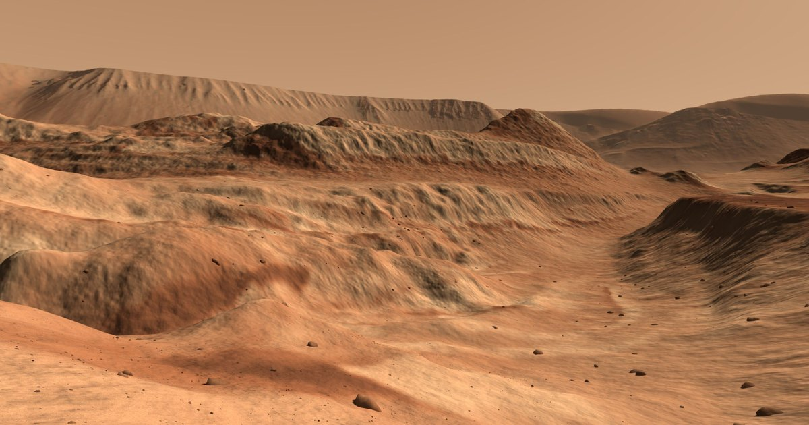
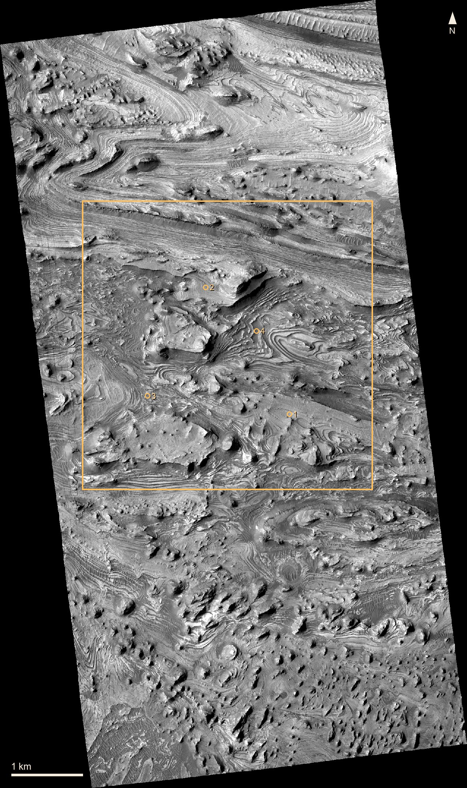
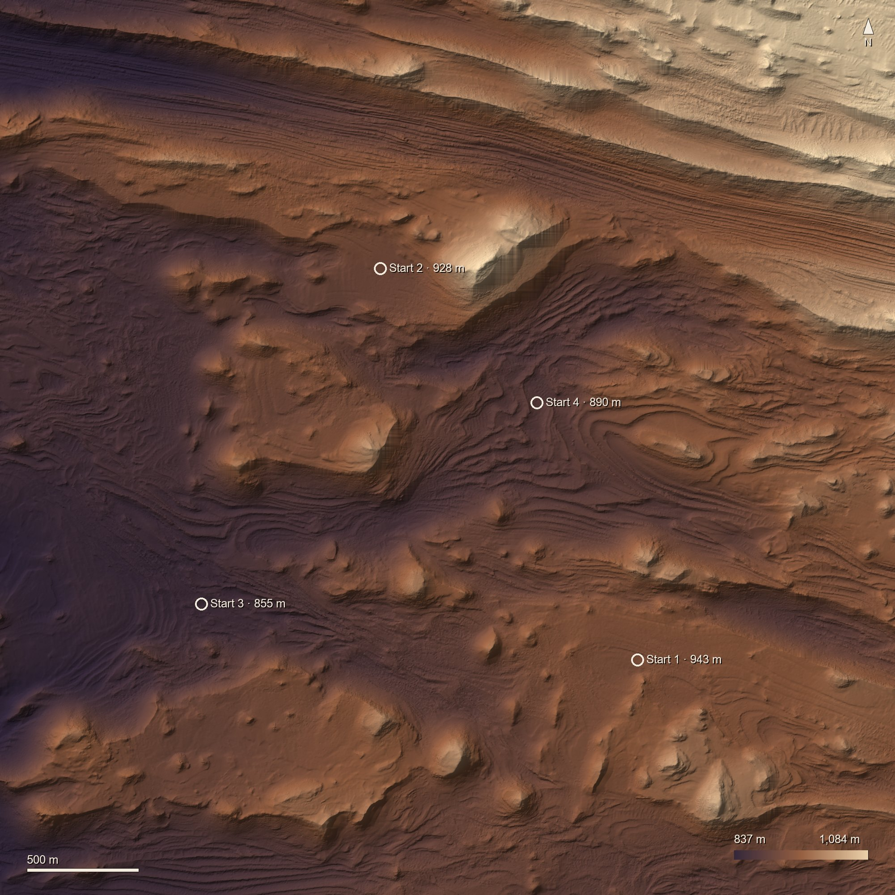
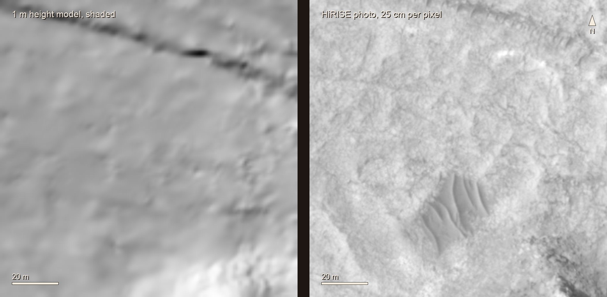
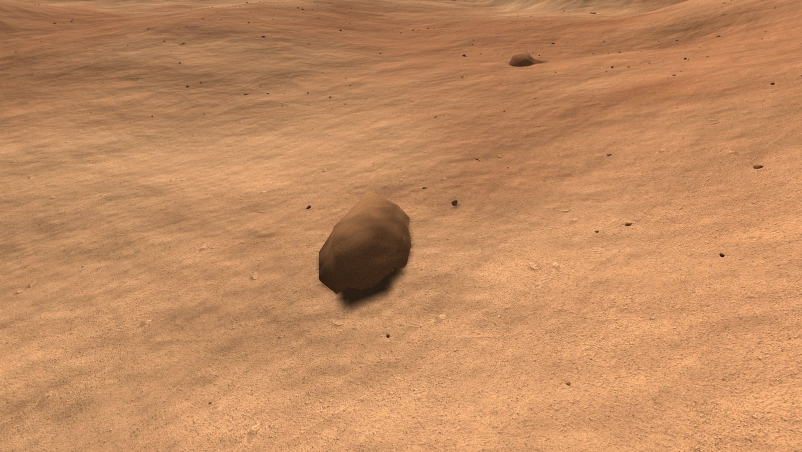
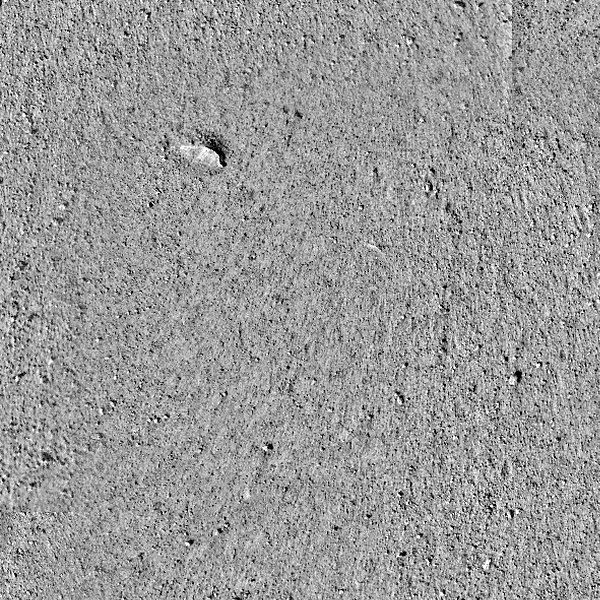

How it was made

The place

Candor Chasma is a canyon in the middle of Valles Marineris. Its floor is about 2 km of layered rock. The walk is inside one HiRISE stereo strip, the only ground here measured finely enough to walk on.
The ground

HiRISE photographed this ground twice from slightly different angles, and the pair gives its height. Beyond the 4 km square the land comes from coarser maps: CTX (20 m), then HRSC and MOLA (200 m), out to 240 km.
The photo

The HiRISE photo, 25 cm per pixel, is laid on the heights. It is black and white; the colour is a palette applied to its brightness. It was taken on 23 December 2006 at 15:30 local time with the sun 35° up. That sun's shading was divided out using the heights, so the walk can light the ground with its own sun. The sun starts where it was and moves at the rate of a Mars day.
Up close


HiRISE sees nothing much smaller than a metre, so detail near you is added. Rocks and pebbles are placed at random, as many as the photo's slope and darkness suggest. The grain is a real photo of Mars ground from another place; only detail under 8 cm is used, so the brightness stays Candor's.
Walking
You are 1.80 m tall, with no suit, in 38% of Earth's gravity. You walk at 0.94 m/s, the pace measured for Mars gravity (Cavagna et al. 1998), slow down on slopes as Tobler's hiking rule says, slip on sand steeper than 31°, and jump 1.7 m.
Sound
The wind was recorded by Perseverance's microphone in Jezero crater, on the other side of Mars. On Mars it is about as loud as a quiet room and mostly below 300 Hz, so headphones help.
Not right yet
- The sky colour is painted, not computed from Mars dust.
- The ground reflects light in the simplest way (Lambert). Real Mars soil is brighter with the sun behind you.
- Rock sizes do not follow the measured Mars rock size law (Golombek and Rapp 1997).
Credits
- HiRISE images and height models. NASA/JPL/University of Arizona; height models by USGS Astrogeology.
- CTX. NASA/JPL/MSSS. HRSC. ESA/DLR/FU Berlin. MOLA. NASA/GSFC. InSight IDC. NASA/JPL-Caltech.
- SuperCam audio, sols 4 and 215. NASA/JPL-Caltech/LANL/CNES/CNRS/INTA-CSIC/Space Science Institute/ISAE-Supaero, from the NASA Planetary Data System, Geosciences Node.
No endorsement by any of the sources is implied. Drawn with three.js.
Sources
- Murchie et al. 2009, JGR 114, E00D05; Okubo et al. 2008, JGR 113, E12002. The layered rocks of Candor Chasma.
- Cavagna et al. 1998, Nature 393:636. Walking speed at Mars gravity.
- NASA/TP-2009-214796, EVA Walkback Test, Norcross et al. Walking at 3/8 g.
- Tobler 1993, NCGIA Technical Report 93-1. Walking speed on slopes.
- Atwood-Stone and McEwen 2013, GRL 40:2929. How steep Mars sand stands.
- Golombek and Rapp 1997, JGR 102. Rock sizes on Mars.
- Maurice et al. 2022, Nature 605:653. Sound on Mars.
- Stott et al. 2023, JGR Planets 128. Catalogue of SuperCam recordings.